初见宏村，就被迷住了，完全是一幅水墨淡雅的中国画映入在眼帘啊，不愧有着“画里乡村”的称呼，宏村也算是徽派建筑的典型代表。
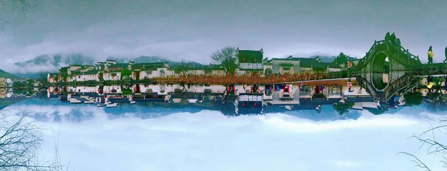全村依照牛的内脏的形状而建，村里人都姓汪。村里最漂亮的地带是中心的池塘——月沼。
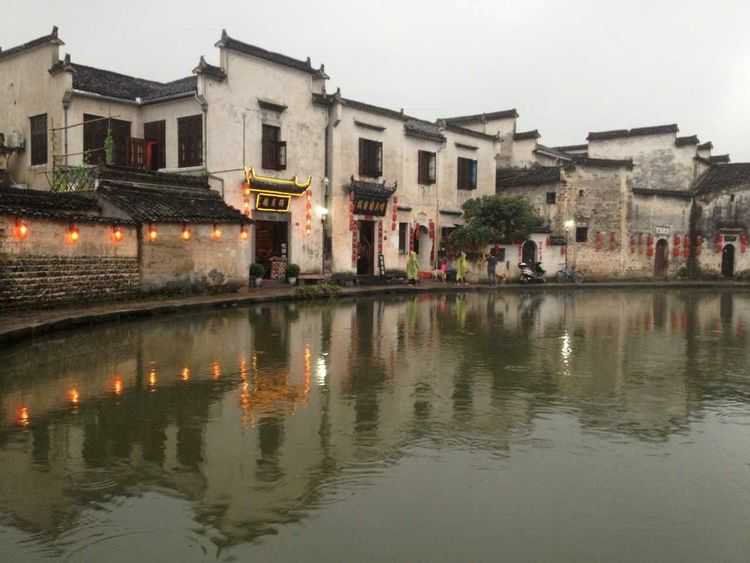白墙、红灯、清潭、流水、人家...
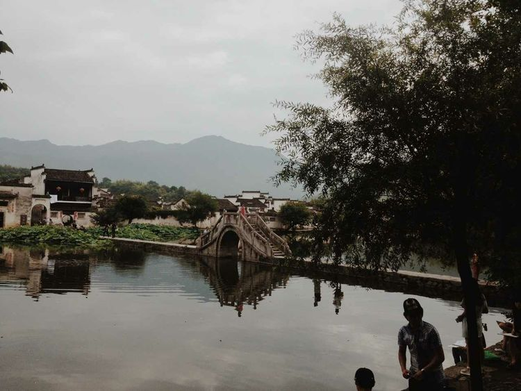无论从哪一个角度看，都是一幅充满意境的山水画。
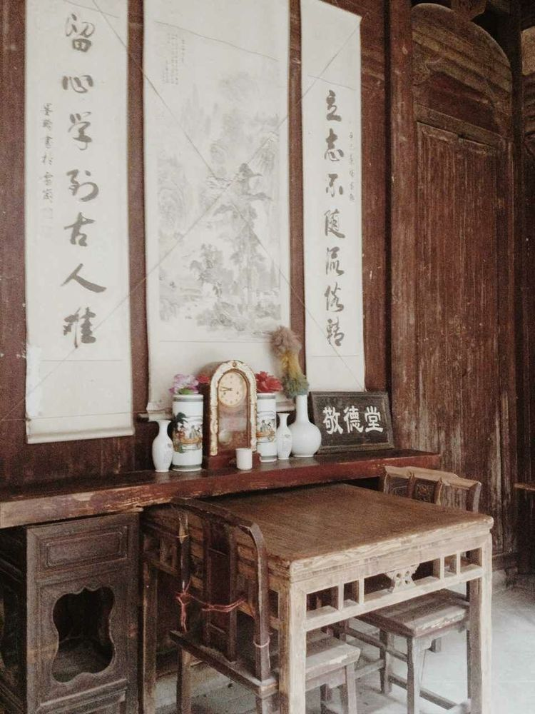 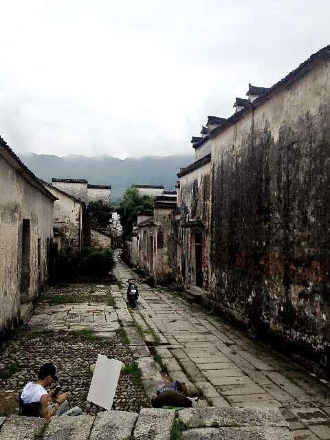青石板路的尽头...
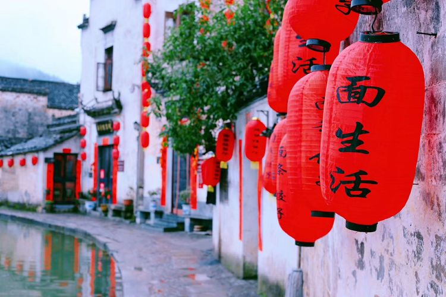大红灯笼呦，高高挂起呦
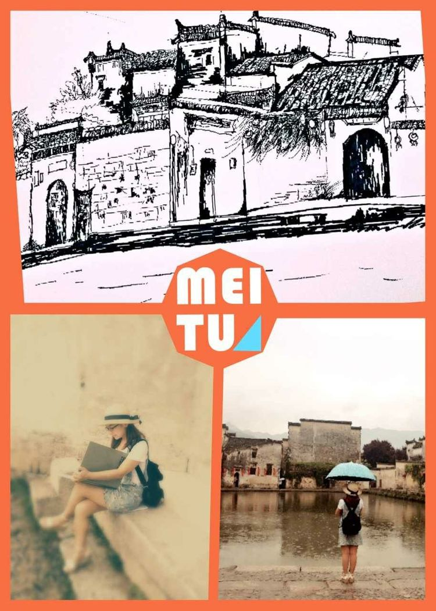欣赏美景的同时也不能忘记自己的任务——我是出来写生的人。
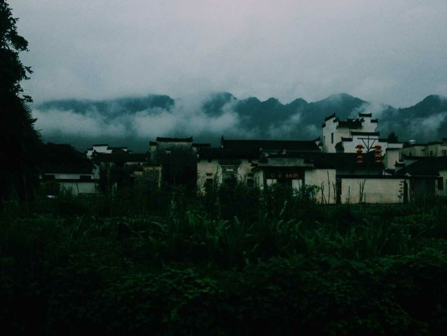瞧那，泼墨山水般的写意。
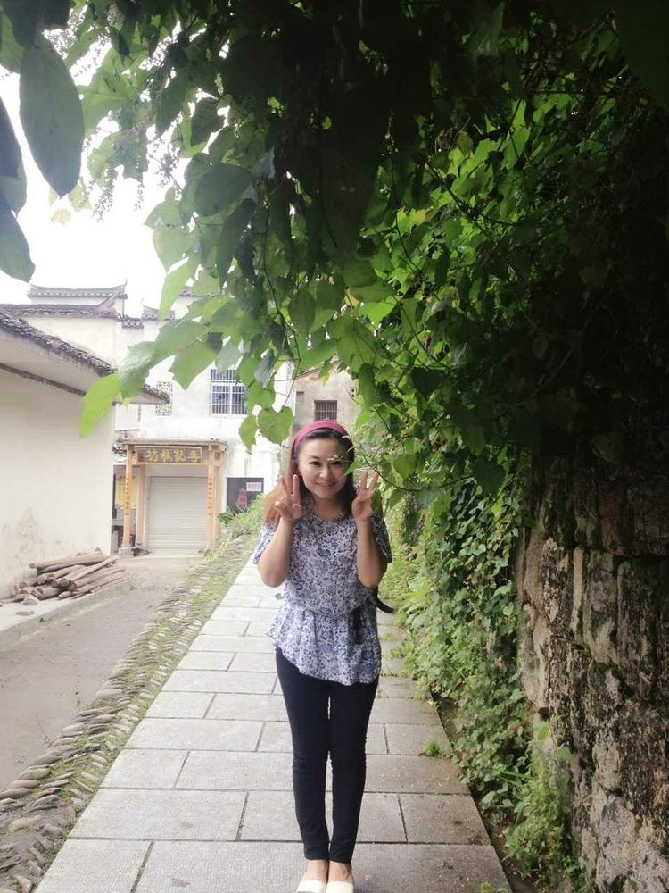宏村，西递不光是美术爱好者向往的地方了，越来越多的人选择了到这里旅游，就是想要远离城市的喧嚣感受片刻的宁静。
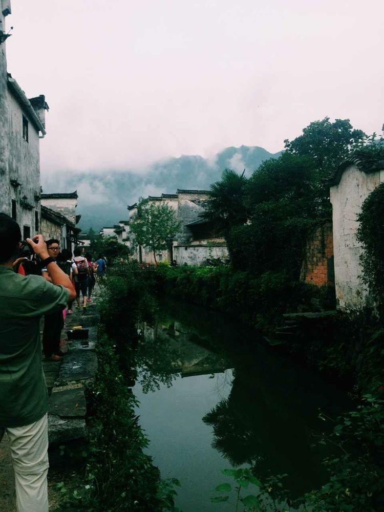 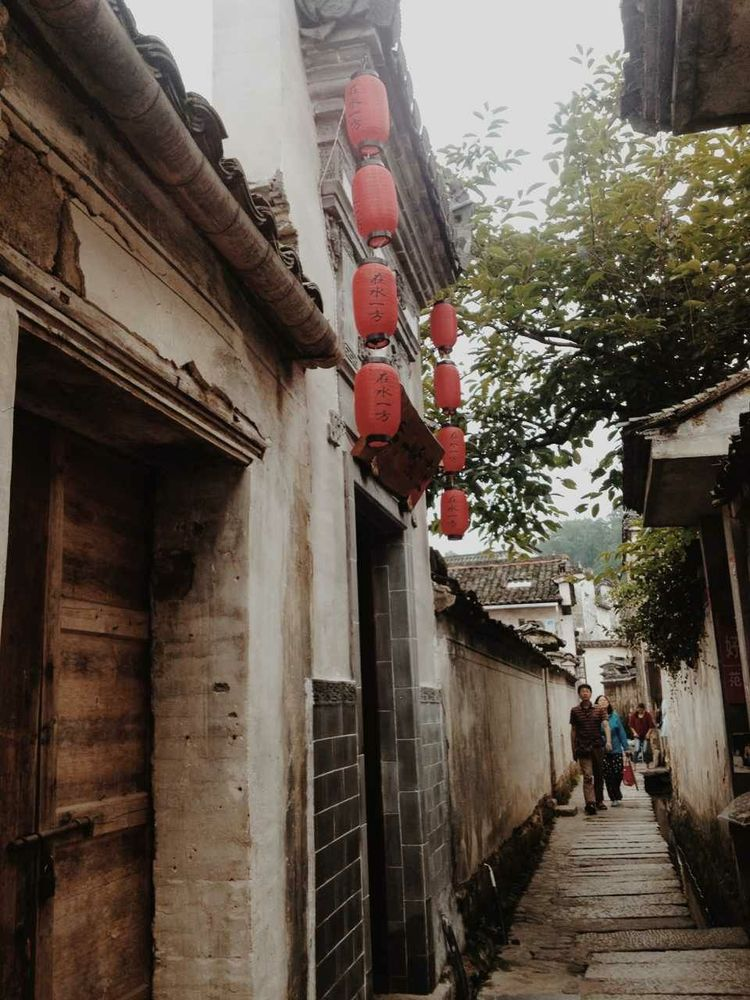西递跟宏村还不太一样，它是一种清秀之美，而宏村充满着历史沉淀的美感。
小荷才露尖尖角。
宏村，已经成为了徽州古村的代名词...